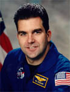

Lyndon B. Johnson Space Center
Houston, Texas 77058
|
National Aeronautics and Space Administration Lyndon B. Johnson Space Center Houston, Texas 77058 |
 |
Biographical Data |
||
Neil W. Woodward III (Commander, USN)
NASA ASTRONAUT (FORMER)
PERSONAL DATA: Born July 26, 1962 in Chicago, Illinois. Married. Enjoys reading, computers, sailing, music, wine and cooking. His father, Dr. Neil W. Woodward Jr., resides in Oklahoma City, Oklahoma. His mother, Aileen S. Woodward, is deceased.
EDUCATION:
ORGANIZATIONS: United States Naval Institute, Tau Epsilon Phi fraternity, Association of Space Entrepreneurs.
AWARDS: Distinguished Graduate, US Naval Test Pilot School; Empire Test Pilot School Award for Best Developmental Test Thesis, USNTPS. Awarded two Navy Commendation Medals; two Navy Achievement Medals; various other service awards. Awarded Texas Business Hall of Fame fellowship, 2000.
EXPERIENCE: Woodward graduated from MIT in June 1984, with a degree in Physics. He attended graduate school at the University of Texas at Austin, working in the Center for Relativity and then the Fusion Research Center. His thesis research involved using optical spectroscopy to investigate neoclassical plasma rotation in the Texas Experimental Tokamak fusion reactor. He received his Master’s degree in 1988 and joined the US Navy, reporting to Aviation Officer Candidate School in Pensacola, Florida. He was commissioned in January 1989, and earned his wings as a Naval Flight Officer in March 1990. He reported to NAS Whidbey Island, Washington, where he completed initial Bombardier/Navigator training in the A-6E Intruder and was then assigned to the Green Lizards of Attack Squadron 95. Woodward made two deployments with VA-95 aboard the USS Abraham Lincoln (CVN-72) in support of Operations Desert Storm (post-cease fire), Southern Watch, and Somalia. He was then assigned to the Naval Strike Warfare Center in Fallon, Nevada, where he served as Weaponeering Officer and Contingency Cell Officer. In 1995, he was selected to attend the U.S. Naval Test Pilot School at Naval Air Station Patuxent River, Maryland, and graduated with distinction in July 1996. Upon graduation, he was assigned to the Air Vehicle/Stores Compatibility Department at the Naval Strike Aircraft Test Squadron in Patuxent River. While at NSATS, he cross-trained in the F/A-18 Hornet and tested stores and systems for the F/A-18B, F/A-18D, and F/A-18F aircraft. Woodward was assigned to the Strike Aircraft Test Squadron when he was selected for the astronaut program.
Woodward has logged over 1,700 flight hours in more than 25 different aircraft and has 265 arrested landings.
NASA EXPERIENCE: Selected by NASA in June 1998, he reported for training in August 1998. Astronaut Candidate Training included orientation briefings and tours, numerous scientific and technical briefings, intensive instruction in Shuttle and International Space Station systems, physiological training and ground school to prepare for T-38 flight training, as well as learning water and wilderness survival techniques. From July 2004 to July 2008 Woodward was on detached duty to Exploration Systems Mission Directorate at NASA Headquarters in various roles, including Director of the ESMD Integration Office and Director, Commercial Orbital Transportation Services. He retired from the Navy and NASA in October 2008, and currently works in the information technology field.
OCTOBER 2008
This is the only version available from NASA. Updates must be sought direct from the above named individual.
{kind=link}